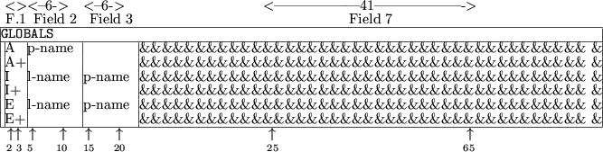
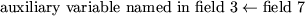

Next: 4.4.3 The INDIVIDUALS Data
Up: 4.4 Data Cards
Previous: 4.4.1 The TEMPORARIES Data
4.4.2 The GLOBALS Data Cards
The GLOBALS
indicator card
is used to announce the assignment of general parameter
values.
the syntax for data cards following the indicator card is given in
Figure 4.4.
Figure 4.4:
Possible data cards for GLOBALS
|  |
The one or two character string in field 1 specifies the type of
assignment that is to be made from the card.
Possible values for the
first character of the string are:
- A
- This card
announces that an auxiliary parameter is to be assigned a
value. The string p-name in field 2 gives the name of the
auxiliary parameter that is to be defined; this name must be a valid
Fortran name, see Section 3.1.2, and must have been previously
defined in the TEMPORARIES
section. The string in field 7 is an arithmetic expression. The
assignment
is made, where again means ``is given the value''; any
variable mentioned in the arithmetic expression must either be
reserved (see Section 4.4.1), or have been defined in the TEMPORARIES
section. If in this latter case, the variable is integer or real, it
must have been allocated a value itself on a previous GLOBALS
data card.
- I
- This card
announces that an auxiliary parameter is to be assigned a
value whenever a second logical
auxiliary parameter has the value .TRUE. The string p-name in field 3 gives the name of the auxiliary parameter that is
to be defined; this name must be a valid Fortran name,
see Section 3.1.2, and must have been
previously defined in the TEMPORARIES
section. The string in field 7 is an arithmetic expression. The assignment
will be made if and only if the logical
auxiliary parameter l-name specified in field 2 has the
value .TRUE.; the
logical parameter must have been previously defined in the TEMPORARIES
section and allocated a value in the GLOBALS
section. The arithmetic expression must obey the rules set out in the
A section above.
- E
- This card
announces that an auxiliary parameter is to be assigned a
value whenever a second logical
auxiliary parameter has the value .FALSE. The string p-name in field 3 gives the name of the
auxiliary parameter that is to be defined; this name must be a valid
Fortran name, see Section 3.1.2, and must have been previously
defined in the TEMPORARIES
section. The string in field 7 is an
arithmetic expression. The assignment

will be made if and only if the logical auxiliary parameter,
l-name, specified in field 2 has the value .FALSE.; the
logical parameter must have been previously defined in the TEMPORARIES
section and allocated a value in the GLOBALS
section. The arithmetic expression must obey the rules set out in the
A section above.
The data started on an A, I and E card
may be
continued on a card whose first field contains an A+, I+ or
E+ respectively.
Such cards contain an arithmetic expression in
field 7 and no further data; the arithmetic expression must obey the
rules set out in the A section above. At most nineteen
continuations of a single assignment are allowed.
The GLOBALS
section is intended for the definition of auxiliary
variables which occur in more than one element type.
If an auxiliary
variable occurs in a single element type, it may be defined in the
INDIVIDUALS
section (see Section 4.4.3).
Next: 4.4.3 The INDIVIDUALS Data
Up: 4.4 Data Cards
Previous: 4.4.1 The TEMPORARIES Data